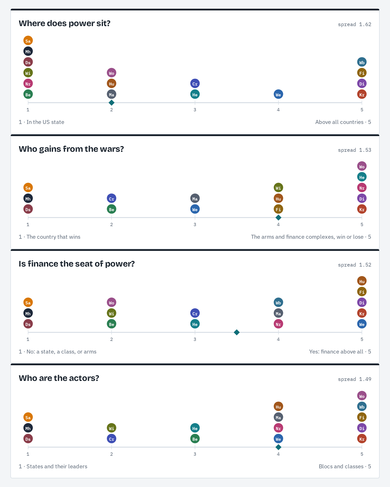
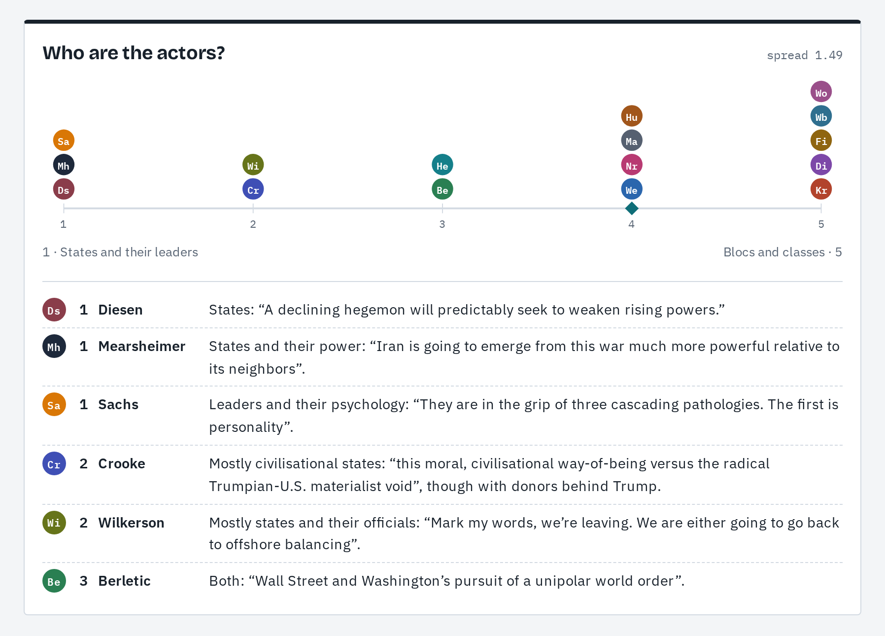
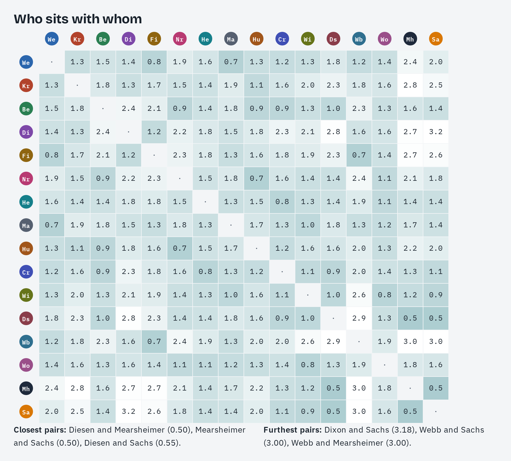
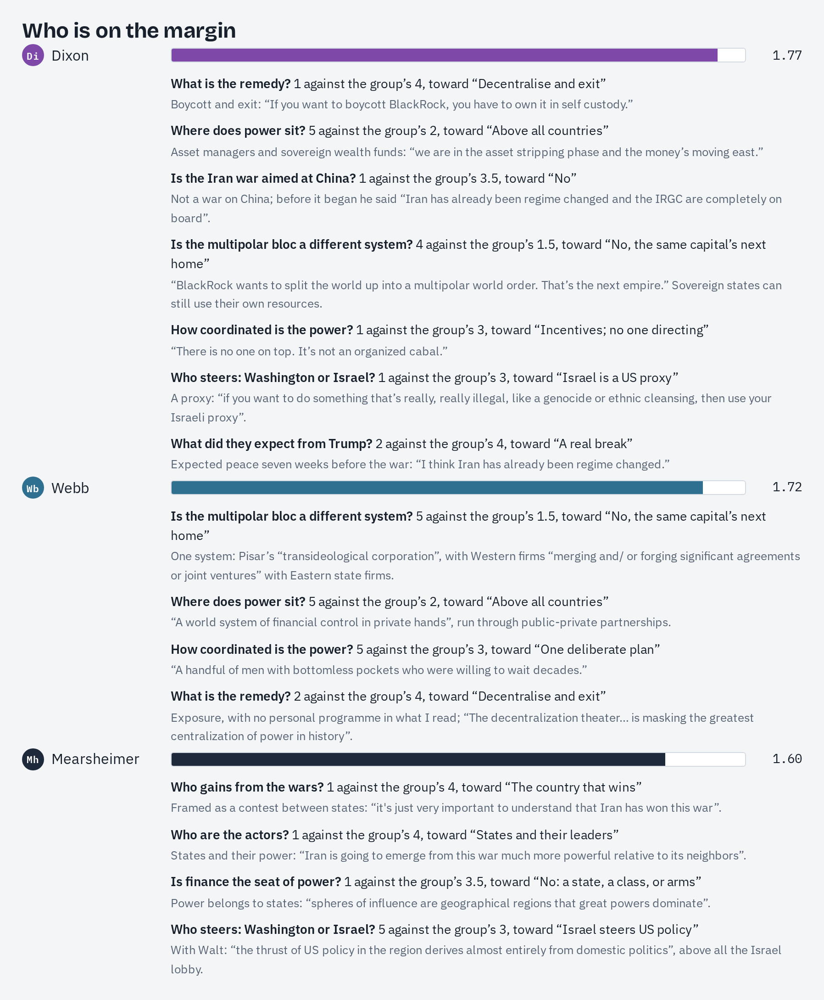
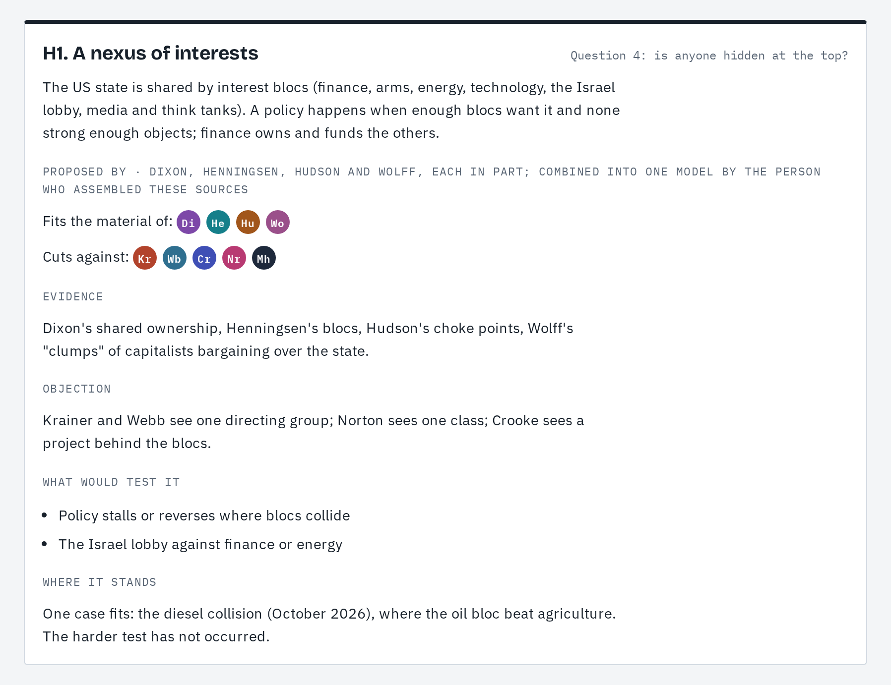
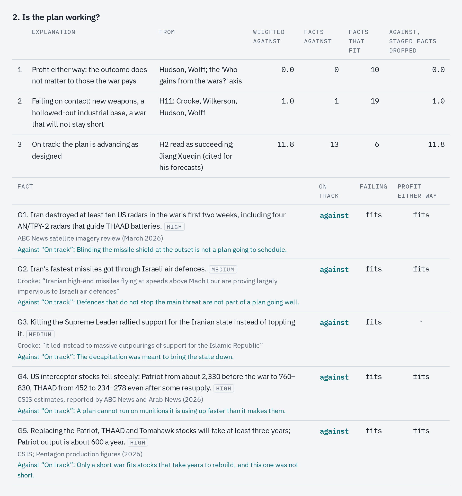

Fourteen Independent Thinkers, Read Side by Side
I asked an AI to read Richard Werner, Michael Hudson, Catherine Austin Fitts, Glenn Diesen, Whitney Webb and eleven others in their own words, check every quote, and show where they converge, where they split, and how to test the difference.
I listen to a lot of commentators outside the mainstream. Fourteen of them kept touching the same questions from different angles, and I wanted to know whether they fit together. They are economists, former officials, investigative journalists, bankers and geopolitical analysts. Most of them are outside the mainstream, or have left it. Each has a strong account of where power sits and how it is used. Each speaks on podcasts and writes on Substack, often for hours a week.
No single person can keep all of that in their head at once. I would hear Michael Hudson explain how creditors capture governments, then Alastair Crooke describe a war in terms of civilisations, then Simon Dixon say there is no one at the top at all. They sounded like different stories. I had no way to tell whether they were contradicting each other or describing different parts of the same machine.
This kind of cross-reading used to need a research team: people to transcribe, read, index, compare and check. I wanted to see whether an AI could do that work, and do it carefully enough to trust. So I set it a narrow job. Read these people in their own words. Compare them with each other, not with official fact-checks. Quote them exactly. Show me where they agree, where they disagree, and what would settle the disagreements.
This article is about that experiment. The topic, money, war and who gains, kept me interested, but the real subject is the method: what an AI can do with a large, messy, contested body of ideas, and what it gets wrong.
The full charts page, with every score and the author's words behind it, is at christiancadieux.github.io/fourteen-thinkers/author-axes.html.
The group
The group: Richard Werner, Alex Krainer, Brian Berletic, Simon Dixon, Catherine Austin Fitts, Ben Norton, Patrick Henningsen, Chris Martenson, Michael Hudson, Alastair Crooke, Lawrence Wilkerson, Glenn Diesen, Whitney Webb and Richard Wolff. Later I added two more, John Mearsheimer and Jeffrey Sachs. They are so widely quoted that leaving them out would have looked like avoiding them, and a second or third voice reaching the same conclusion is worth having. So the title says fourteen, but there are sixteen.
I chose them for a shared quality: none of them is speaking for an institution that pays for the view. Beyond that they differ a lot. Werner is an economist known for his work on how banks create money. Fitts was an assistant secretary of housing and a Wall Street banker. Wilkerson was Colin Powell's chief of staff. Webb is an investigative journalist who traces networks of money and intelligence. Wolff is a Marxian economist. Diesen is a realist scholar of international relations, and so is Mearsheimer, the best known of them. Sachs is an economist and long-time adviser to the United Nations.
The AI (Claude, from Anthropic) worked from their own material: interview transcripts, articles, essays, book chapters, about 170 pieces in all. Where a transcript had no speaker labels, it had to work out who was talking, and that turned out to matter more than I expected.
Step one: they agree on far more than I expected
The first pass was a count rather than a debate. For each recurring claim, the AI listed which of the sixteen make it in their own material.
| Claim | Who makes it | Count |
|---|---|---|
| Real decisions are made above elected government | all but Mearsheimer and Sachs | 14 |
| Left against right is the wrong way to see politics | Werner, Krainer, Dixon, Fitts, Henningsen, Martenson, Hudson, Norton, Berletic | 9 |
| US allies, Europe above all, are being stripped | Werner, Berletic, Dixon, Norton, Henningsen, Hudson, Wilkerson, Diesen, Wolff | 9 |
| The dollar system is a weapon, and it is under strain | Werner, Norton, Berletic, Dixon, Henningsen, Martenson, Hudson, Crooke, Wolff, Sachs | 10 |
| Crises and wars move wealth upward | Fitts, Dixon, Norton, Henningsen, Martenson, Wilkerson, Wolff, Sachs | 8 |
| Finance has come loose from production | Werner, Hudson, Krainer | 3 |
A count shows how widely a claim is held, not whether it is true. Many of these people share hosts and audiences, so the count also overstates how independent the agreement is. It is a starting point. What made it interesting was the next step.
When the AI assembled their accounts into one mechanism, the parts fitted together. It has twelve parts:
- physical energy as the base (Martenson);
- bank credit creation (Werner);
- rent extraction (Hudson);
- ownership through a few asset managers (Dixon);
- the way policy turns income into share value (Fitts);
- extraction abroad (Krainer);
- the dollar system and sanctions (Norton, Hudson);
- enforcement through sanctions, proxies and blockades (Berletic, Fitts, Henningsen);
- the manufacture of consent through media and think tanks (Henningsen);
- accounts that cannot be audited (Fitts);
- a coming digital control layer (Fitts, Werner);
- the cultural cohesion that lets some societies resist (Crooke).
Each author describes one or two parts well and the others barely. Together they describe a whole.
This is the core claim of the article. These people do not lack ideas. They lack a way to see each other's work at the same time. Once the work is laid side by side, much of their apparent disagreement turns out to be people describing different floors of the same building.
Step two: the disagreements are few, and they are precise
The real disagreements come down to two questions.
Who is at the top? Krainer describes a "monolithic and ruthless conspiracy". Dixon says the opposite: "This is systemic. There is no one on top. It's not an organized cabal." Norton and Wolff describe a ruling class acting largely in the open. Diesen needs no ruler at all: a declining power behaves predictably because of its position. Mearsheimer and Sachs look to governments and the lobbies that press on them. Mearsheimer, with Stephen Walt, wrote the best-known case that the Israel lobby steers US policy in the Middle East. Sachs explains the Iran war through two leaders, Trump and Netanyahu, and the religious nationalists around them.
What is the remedy? One camp wants strong sovereign states to discipline finance (Krainer, Hudson, Norton, Berletic and others), and Mearsheimer and Sachs also put their hope in states. Another wants decentralisation and personal exit (Werner, Fitts, Dixon, Martenson). Each camp's remedy is the other's main fear: the first sees a strong state as protection, the second sees it as the builder of a digital control system. Wolff offers a third way: make firms democratic from the inside, as worker cooperatives.
To make this visible, the AI scored each author from 1 to 5 on thirteen questions, and attached the author's own words to every score. A score without a quote was not allowed.

Step three: concepts matter more than data
The most useful work was not counting. It was reframing.
Early versions of the charts asked "Is the US empire winning or losing?" That question quietly assumes that countries are the actors and that wars are won or lost by countries. Several of the authors think that way. Diesen and Mearsheimer, the realists, do, and so does Sachs. So does Wilkerson, the military man, and often Crooke. When a policy hurts the country that pursues it, they find it puzzling. Diesen on Europe's policy: "For me, it is completely irrational. It doesn't make any sense."
Others reject that frame entirely. Dixon: "America is not a country; it is a series of companies and a financial industrial complex." Wolff describes government as the arena where "clumps" of capitalists bargain. On this view the puzzle disappears. A policy can be irrational for a country and perfectly rational for whoever profits from it.
So we changed the question. "Who wins the war?" became "Who gains from the wars?", and a new question was added: "Who are the actors, states or blocs?" The answers spread out sharply, from Diesen, Mearsheimer and Sachs at one end to Dixon, Fitts, Webb, Wolff and Krainer at the other. Wolff put the bloc view in one line: "Wars accelerate contracts to replace used-up arms and thereby profit military-industrial complexes."

The same shift changed my own language. "This war cost us trillions" treats a country as one payer. Followed as flows, the money goes from the investors around the world who buy US government bonds to the arms makers, their shareholders and their employees. Wolff notes that those employees are spread on purpose, with "military bases in all 50 states". Nothing in the data changed. The concepts did, and the picture changed with them.
Step four: who sits with whom
With every author scored, the AI could measure distances between them. Two camps appeared.
- One camp trusts states: Norton, Hudson and Berletic, with Henningsen, Crooke, Wilkerson, Wolff, Diesen, Mearsheimer and Sachs nearby.
- The other places power in networks above countries: Werner, Fitts, Martenson and Webb, with Dixon further out.
- A third line separates those who think in countries (Diesen, Mearsheimer, Sachs, Wilkerson, Crooke) from everyone else.
- The three academics are the tightest cluster: Diesen, Mearsheimer and Sachs make up the three closest pairs in the set.

Closeness here needs care. Hudson and Norton score as near neighbours, but Norton's site carries Hudson's interviews. Wolff sits close to Wilkerson and Diesen, whose shows he appears on. Diesen, Mearsheimer and Sachs often appear together. Many of these people share hosts and audiences. Sixteen voices may really be fewer independent sources than that.

Step five: testing instead of believing
Agreement is not proof, especially among people chosen for a shared outlook. So the most important step was to find tests that do not depend on counting heads.
Forecasts. The US and Israeli attack on Iran on 28 February 2026 was a natural experiment. Fourteen of the sixteen had said something about it before and after. Some got it right:
- Wilkerson, in November 2024: "I'm worried that we might be walking into a war that we cannot walk away from because of Netanyahu."
- Diesen, in March 2025, that Iran "would hit back in a massive way".
Some did not. Dixon said in January 2026 that Iran had "already been regime changed" and that peace was coming, seven weeks before the war. The pattern was striking: the authors who read written plans and structure did better than those who read Trump's personality.
Cases. In an October 2026 interview Wolff described a collision between two interest groups. Farmers, squeezed by diesel prices, wanted Trump to ban diesel exports. The refiners told him: "We have been your loyal supporters. We don't want this." Trump was caught in the middle: "One group of his supporters want it, another group of his supporters don't want it." The ban was dropped; the farmers got a token release of European reserves. One case proves little, but it is exactly what a model of competing blocs predicts: when the blocs collide, the older and better-organised one wins.
Documents. When an author cites a document, the AI read the document itself. Berletic cites a 2009 Brookings paper, "Which Path to Persia?". One chapter, titled "Leave it to Bibi", discusses letting Israel strike Iran so that criticism and retaliation would be "deflected away from the United States and onto Israel". The paper itself warns that this would be hard to sell, because the planes and much of the money are American. That one source changed how I read the authors who see the war as fought only for Israel. If the deflection logic is in use, how a war looks is poor evidence of whose war it is.
Hypotheses. The AI collected ten competing explanations, some from single authors and some combining pieces from several. Each comes with the authors whose material supports it, the authors whose material cuts against it, and a list of things that would test it. Some of the tests use public data. One holds that finance can move east while the arms industry stays rooted in the United States. Its first test was "foreign holdings of US Treasuries keep falling". The data split that test in two:
- Central banks outside the West are cutting their Treasuries and buying gold, exactly as predicted. China's central bank has bought gold for 22 months in a row.
- Total foreign holdings reached a record in June 2026, as private buyers bought more.
The hypothesis is now marked "mixed". I like that result. It shows the tests can fail.

Weighing the evidence. The question I care about most is what the Iran war is for, and counting authors cannot settle it. So we borrowed a method from intelligence analysis, Richards Heuer's analysis of competing hypotheses. You list facts, not opinions: documents, public data, and events the authors report. You mark each fact as fitting, contradicting, or irrelevant to each explanation. The winner is the explanation with the fewest solid facts against it, not the most in its favour, because most facts fit several stories at once. Facts that a capable actor could stage for appearances are flagged, and the ranking is computed with and without them.
Five explanations went into the first grid. The explanations that treat the war as serving someone's aims did best: a war against China's corridors, a war for profit for the arms, energy and finance blocs, a war for US energy dominance and, close behind, a war for Israel. Reading it as a blunder did worst: the war had been worked out on paper since at least 2009, and its targets, such as China's new railway through Iran, were chosen strategically. The one solid fact against a war fought only for Israel is the Brookings plan to let the blame fall on Israel. Two explanations, the war against China and profit for the blocs, have no fact against them at all. That is partly a weakness of the method: an explanation that predicts little is hard to contradict.
But a war can have a purpose and still fail. Wolff's own summary has both halves: its "goal was to reverse the decline of the US empire; its result was the opposite." So a second grid asked whether the plan is working, and here the facts are mostly public data:
- at least ten US radars destroyed in the first two weeks, four of them guiding THAAD batteries;
- Patriot interceptor stocks down by about two-thirds and THAAD by over a third, with at least three years to rebuild them;
- THAAD interceptors pulled from South Korea and Patriots diverted from Ukraine;
- aircraft carriers resupplied from Diego Garcia, 2,200 miles away, after the Bahrain base was hit.
"On track" had by far the most facts against it. "Failing" and "profit either way" both fit, and both can be true: an arms industry built for profit can enrich its contractors while the plan for dominance fails. The one solid fact against "failing" is that the US share of Europe's LNG imports keeps rising. The energy-sales part of the plan is working even if the military part is not.
The gaps in the first grid are small, and every mark is a judgement. That is why each "against" is shown with its reason, so a reader can disagree with a specific mark instead of with the whole conclusion.

Step six: checking the work
The AI made mistakes, and rereading its own work did not catch them. One was telling: it credited me with ideas that were already in the authors' work. What caught the mistakes was a check it built and ran: a ledger. Every author's texts were saved in one folder per author. A short program checked every quotation in the document against those texts, and checked every "seven of the sixteen" count against the list of names. It flagged anything it could not find. By the end, more than 400 quotations had been checked, over 300 of them long enough to verify word for word, and none remained unmatched. Every one of the 170 scores on the charts carries a quote that passed the same check.
The lesson for anyone using AI on serious material: the synthesis is cheap now. The checking is the work. An AI that writes fluently and quotes freely will drift from its sources. A dull, mechanical check catches what a careful rereading misses.
Step seven: reading people properly
Some of the most useful corrections came from me, because I had listened to these people for years.
Martenson often sounds baffled on camera, about markets or oil prices. The AI read that as uncertainty. I did not. In his own writing he is plain: "the price of oil is so heavily manipulated at this point that veteran commodities traders and portfolio managers like Jeff Currie are throwing in the towel in exasperation." In one interview he does both in a single breath. He calls it "what I will politely call shenanigans", then says the markets "were clearly manipulated". He has also described a YouTube strike after mentioning a drug the platform disliked. A person under that kind of pressure speaks in two voices. An honest synthesis has to read both.
It also took a lot of coaching to keep the AI on the rails. Left to itself, it read events the way they are presented. It took official statements at face value, when everyone involved has reasons to lie. It did not see that an empire which needs its population on its side also needs plausible deniability, so a war can be made to look like someone else's. And it judged each move on its own, when the players are willing to sacrifice many pawns to win a queen.
One example is the question of who controls Washington. The lobbying records give a rough measure. In 2024 the defense industry spent about $149 million on federal lobbying, and the oil and gas industry about as much. AIPAC spent about $3.3 million, some forty times less. Its weight is in election money instead: with its super PAC it spent about $95 million on the 2024 elections. Yet the arms and energy lobbies rarely make the news. My own reading is that the US and Israel play good cop and bad cop, and the attention on Israel keeps it off them.
This is where a human and an AI work well together. The AI reads everything; the human knows how these people talk.
The limits
I want to be clear about what this does not show.
- It does not prove that their picture is right. These sixteen were chosen for a shared outlook, so part of their agreement was built in.
- Their agreement is not fully independent. They share hosts, platforms and sometimes sources.
- The scores are judgements. They rest on the authors' own words, but someone decided which words to use.
- Reading time was uneven. Some authors publish mostly behind paywalls or in video, so they were read less.
What it does show is narrower and, I think, more useful. Where a group of serious, independent thinkers converges, the agreement is worth taking seriously. Where they split, the split can usually be reduced to one or two precise questions. And those questions can often be tested.
What it means
A decade ago, a project like this would have needed a team of researchers for months. It took a few days of conversation, a folder of transcripts and a program that checks quotes. The hard part has shifted. Producing a synthesis is now easy; producing one you can trust is the work.
The obvious next step is to send each author the claims attributed to them, together with the strongest objection from another author in the set, and publish what they say back. That is how independent thinkers could start to work as a team: not by agreeing, but by finally seeing where they already do.
For more detail: the full charts page, including the evidence grids, is at christiancadieux.github.io/fourteen-thinkers/author-axes.html, and the full synthesis is at christiancadieux.github.io/fourteen-thinkers/synthesis.html. The saved source texts and the program that checks every quote are on GitHub at github.com/christiancadieux/fourteen-thinkers.